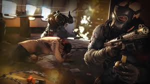
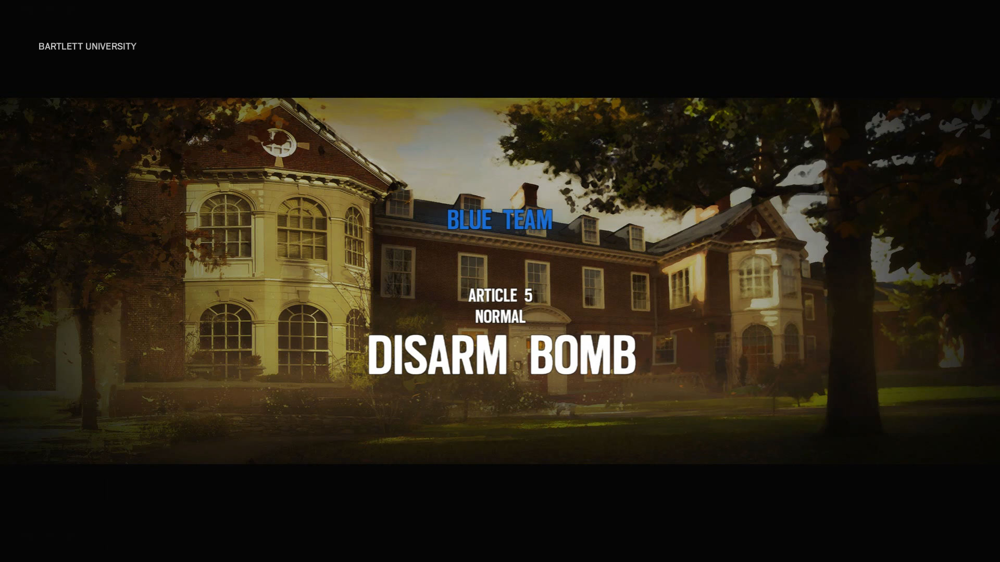

De game bevat drie belangrijke gamemodes - Situaties , Multiplayer en Terrorist Hunt . Situaties bevat tien handleiding missies die spelers toestaan om gameplay concepten offline oefenen tegen bots en krijgen een betere bekendheid met het spel.
 HostageRescue Multiplayer heeft drie subgamemodes - Bomb , Hostage , en veilige omgeving . Alle gamemodes spelen zeer vergelijkbaar, maar hebben totaal verschillende voorwerpen, relatief zichzelf. Bij elke wedstrijd zijn 5v5, spelers hebben minder dan vijf minuten per rondje om hun doelstelling te garanderen, met elk team nodig om ten minste drie rondes winnen om de wedstrijd te winnen.
gerangschikt Hoofd artikel: als Gerangschikt is de competitieve multiplayer playlist te zien in Rainbow Six Siege, die beschikbaar is voor spelers zodra ze level 20 bereiken Terwijl in wezen hetzelfde als casual multiplayer, op volgorde van nature beschikt over meer competitieve gameplay en biedt een aantal kleine veranderingen. Bijvoorbeeld, spelers hebben de mogelijkheid om hun spawn te kiezen in plaats van het feit dat het willekeurig en worden gerangschikt op basis van hun prestaties ten opzichte van het vijandelijke team. Spelers moeten ten minste twee meer ronden dan de tegenstander winnen om de overwinning veilig te stellen, wat betekent dat een team nodig heeft om ten minste vier rondes te winnen, waardoor een totaal van ten hoogste negen rondes kunnen worden afgespeeld.
De PVE gamemode Terrorist Hunt keert terug uit het verleden afleveringen van de serie, het delen van vele gamemodes met Multiplayer. Het beschikt ook over de "Classic" gamemode welke taken spelers met het elimineren van een bepaald aantal terroristen op basis van moeilijkheidsgraad die zich hebben versterkt op een kaart.
